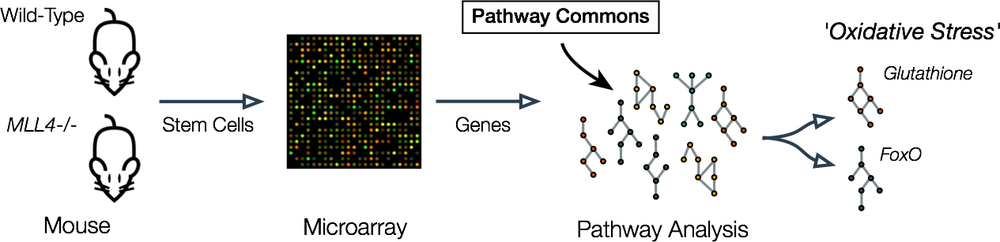

Forever Young
Quick Summary
- MLL4 promotes stem-cell renewal in normal hematopoietic cells and maintenance of leukemia induced by MLL-AF9 oncogene
- Oxidative stress known to trigger differentiation at the expense of stem-cell renewal
- Pathway Commons data linked MLL4 to oxidative stress detoxification pathways
Author Profile
Margarida I Santos is in the University of Texas, MD Anderson Cancer Center, Department of Epigenetics and Molecular Carcinogenesis. Andre Nussenzweig is at the Center for Cancer Research at the National Cancer Institute.
Context
A deep connection has been forged between aging, the ability to replace and repair tissue over time and DNA damage. Much attention has been directed towards stem-cells – those rare entities that give rise to multi-potent daughters alongside those destined to replenish tissues through terminal differentiation (Rossi 2008). Stem-cells have spurred much interest for their therapeutic potential and participation in oncogenesis.
Question
What factors determine blood stem-cell renewal and differentiation in normal and pathological circumstances?
Goals
The Mixed Lineage Leukemia (MLL) gene family encode histone methyltransferases and the founding member, MLL1, was identified in a subset of acute infant leukemias with poor prognosis. A translocation fusing MLL1 with AF9 is associated with acute myeloid leukemia (AML) in infants and the analogous fusion in mice (MLL-AF9) recapitulates the disease (Nakamura 1993). MLL4 is of particular clinical interest as the most frequently altered tumor suppressor in non-Hodgkin’s lymphoma (NHL) (Morin 2011). What constitutes MLL4 tumor suppressor activity is unclear.
Santos et al. (Santos 2014) combine classic genetic and cell biology approaches with pathway analysis to present a unified, mechanistic picture of how MLL4 influences hematopoietic stem-cell (HSC) renewal in normal and leukemic cells.
“Pathway analysis represents an approach to simplify and power the interpretation of differential gene expression assays”
Approach
To better understand the role of MLL4, Santos et al. generated mice deficient for MLL4 and examined blood for changes in hematopoietic stem-cells (HSC). In previous studies, imposing ‘stressful’ conditions was key to revealing the consequences of knockouts. For hematopoietic cells this means driving them into the cell cycle through growth factor stimulation in vitro or competitive reconstitution of bone marrow in vivo. In this case, MLL4 mutants had fewer HSC and more differentiated myeloid cells, supported by the observations that HSC division was biased towards producing differentiated myeloid cells (symmetric commitment) at the expense of multipotent daughters (self-renewal). The effects of MLL4 on renewal mirrored the effects of MLL1 removal (Jude 2007). How might MLL4 tip the balance away from differentiation and back towards renewal?
“The observed a drop in glutathione-detoxification pathway (from Pathway Commons) and Forkhead box O transcription factors (FoxO) which led investigators to posit the more general picture that MLL4 loss led to a general disruption of protection from oxidative stress.”
Pathway analysis represents an approach to simplify and power the interpretation of differential gene expression assays. One one hand, it simplifies analysis by grouping potentially long lists of individual genes into their respective pathways. On the other hand, it provides greater power to detect alterations in pathways using changes in gene expression, despite the fact that any single gene might not necessarily be flagged as statistical significant on its own.
Santos et al. turned to pathway analysis to peer into the pathways affected by MLL4 loss (Fig. 1). In particular, gene set expression analysis (GSEA) was applied to microarray data from wild-type vs MLL4 knockout HSC. The observed a drop in glutathione-detoxification pathway (from Pathway Commons) and Forkhead box O transcription factors (FoxO) which led investigators to posit the more general picture that MLL4 loss led to a general disruption of protection from oxidative stress. Indeed, this directly prompted follow-up experiments revealing an increase in reactive oxygen species (ROS) and DNA damage in MLL4 mutants. Pathway analysis cast a light on the mechanisms affected by MLL, and in doing so, allowed the authors to tap into a rich body of knowledge surrounding ROS, DNA damage, HSC, and leukemia. Oxidative stress has long been known to be an agent of aging by reducing stem-cell renewal in stress conditions such as cell cycle entry and bone marrow reconstitution (Rossi 2007).
Armed with this knowledge, Santos et al. set about to provide a link between MLL4, oxidative stress pathways, and leukemia. First, MLL-AF9 required MLL4 to cause leukemia, similar to the requirement for FoxO (Sykes 2011). Second, loss of MLL4 resulted in a noticeable shift of AML cells towards myeloid differentiation and away from renewal. Third, another application of pathway analysis, this time examining how loss of MLL4 affects MLL-AF9 cells once again revealed changes to oxidative stress through FoxO genes and the glutathione-detoxification pathway. Finally, adding-back FOXOs in MLL-AF9 compensated for the defects associated with MLL4 loss. Altogether, this supported a picture whereby MLL4 mitigates genotoxic stress and thereby biases stem-cells away from terminal differentiation.

Summary
Pathway Commons provides a single point of access for GSEA formatted gene sets (.gmt) from a variety of data sources. Santos et al. successfully incorporated PC data into their GSEA workflow to uncover a link between MLL activity and DNA-damage-mediated stem cell renewal in normal and leukemic cells.